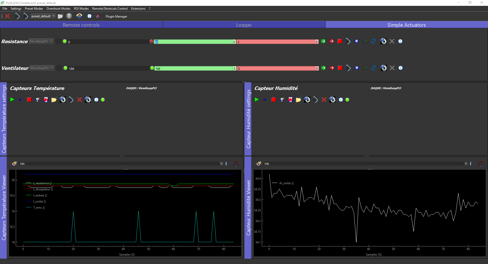

Fabien Villedieu — portfolio de développeur logiciel
BIENVENUE.
Ce portfolio est un petit système d'exploitation : chaque projet est un programme. Cliquez sur une icône pour l'ouvrir.
Par où commencer
- mon projet de fin de BTS, présenté aux PyMoDAQ Days.
- mon stage en laboratoire.
- qui je suis, ce que je cherche.
- ⤓ CV.pdf mon CV, directement.
Astuce : chaque fenêtre a sa propre adresse, pratique pour partager un projet. Échap ferme la fenêtre active.
PLUGINS DAP PYMODAQ
Remplacer des modules d'acquisition à ~1 000 € par des cartes à quelques dizaines d'euros.
Le problème
Le CETHIL, laboratoire de thermique de Lyon, utilisait des modules NI-DAQmx à environ 1 000 € pièce : un frein pour équiper les bancs de mesure des doctorants.
Ce qu'on a livré
- Trois plugins PyMoDAQ pour piloter des cartes low-cost : Raspberry Pi 3B, Pi Zero et Arduino.
- Plusieurs capteurs branchés sur une carte, reliée au PC par un seul lien ZeroMQ.
- Publiés sur PyPI et documentés dans un wiki.
Mon rôle
- Planification de l'équipe : répartition, suivi, coordination sur l'année.
- Plugin Raspberry Pi 3B : communication ZeroMQ, configuration TOML réutilisable, sauvegarde des données.
Méthode
Gantt, six versions successives (v0 analyse → v5 publiable), fiches de suivi par membre, recettes de validation. Les critères non atteints sont documentés plutôt que masqués.
Résultat
Invitation puis présentation en anglais aux PyMoDAQ Days 2026 à Paris, l'événement du framework organisé par son créateur.
Piste V2
Relier plusieurs Raspberry, chacun avec ses instruments, au même PC grâce à LECO, déjà disponible dans PyMoDAQ.

PyMoDAQ Days
IHM PYMODAQ
Mon stage de BTS : une interface d'acquisition pour un banc de test de laboratoire.
Contexte
Première expérience en milieu professionnel et de recherche : l'unité du CETHIL avait besoin d'une interface pour piloter un banc de test thermique et en lire les mesures.
Le banc
Un banc de test avec de la vapeur, un bain thermostaté et un ventilateur, relié au PC par un module d'acquisition NI-DAQmx.
Ce que fait l'interface
- Acquisition et pilotage de machines et de plusieurs capteurs.
- Lecture des données sur plusieurs graphes en temps réel.
- Sauvegarde des données en vue de leur traitement.
Difficultés
L'affichage temps réel des graphes, et le module de sauvegarde, resté incomplet à la fin du stage.
Ce que j'en retiens
La découverte du framework PyMoDAQ, qui a mené l'année suivante au projet DAP.
SERVEUR COMMUNAUTAIRE
Bénévole dans l'équipe d'un serveur Minecraft moddé.
Ce que je fais
- Écriture de l'univers (lore) du serveur, sur plusieurs versions successives.
- Organisation d'événements pour la communauté : compétitions, animations.
- Rédaction d'articles et d'annonces communautaires.
Pourquoi c'est ici
Ce n'est pas un projet de code, mais du travail d'équipe dans la durée : rédiger, coordonner, tenir des délais pour une communauté, sans contrepartie financière.
TVA DASHBOARD
Extension Firefox qui remplace le nouvel onglet : ligne de commande, timeline, journal de mission, 3 thèmes.
CC RADIO SYSTEM
Radio musicale in-game pour Minecraft : recherche, streaming, haut-parleurs et diffusion réseau.
JEU UNITY
Combat au tour par tour, dialogues et déplacement entre zones, en C#.
JEU PYGAME
Tour par tour dans un monde semi-ouvert, architecture MVC.
RECHERCHE TEXTUELLE
Algorithmes Naïf et Boyer-Moore-Horspool, interface Tkinter.
CE PORTFOLIO
HTML, CSS et JavaScript sans framework : bureau, fenêtres et pixel art dessinés en code.
BONJOUR, MOI C'EST FABIEN.
J'ai découvert la programmation au lycée avec la spécialité NSI, et je n'ai plus arrêté. Ce qui me plaît : comprendre un système en entier, puis construire l'outil qui manque.
Après mon BTS CIEL, je cherche une alternance pour la rentrée 2027 en développement logiciel.
Méthode de travail
- Découper : sprints courts, une fonctionnalité à la fois.
- Versionner : numéros de version, changelog, sauvegardes.
- Mesurer : audits de performance avant d'optimiser.
- Documenter : README, wiki, journal de développement.
L'aperçu du CV arrive au sprint 3. En attendant :
⤓ Télécharger le CV (PDF)Le formulaire de contact arrive au sprint 3.